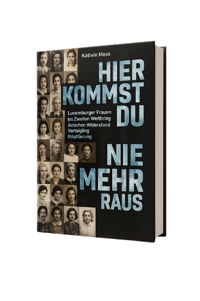
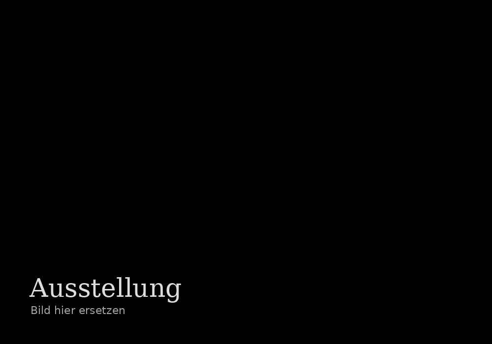
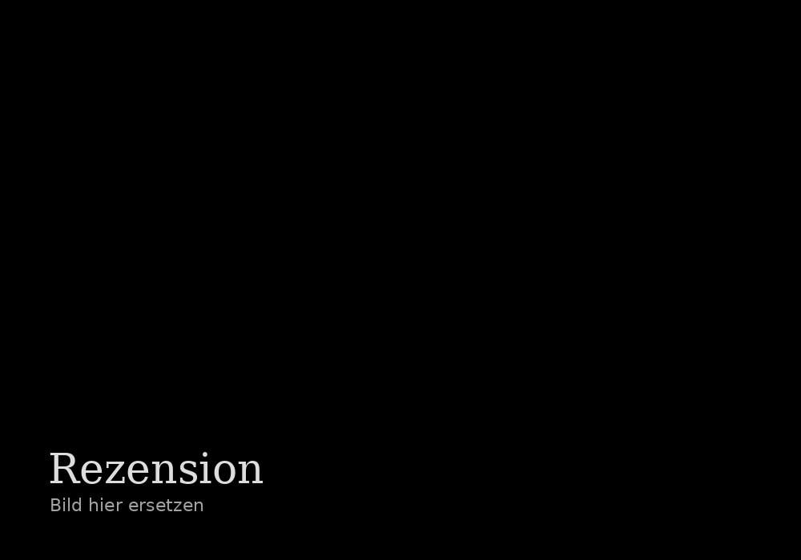
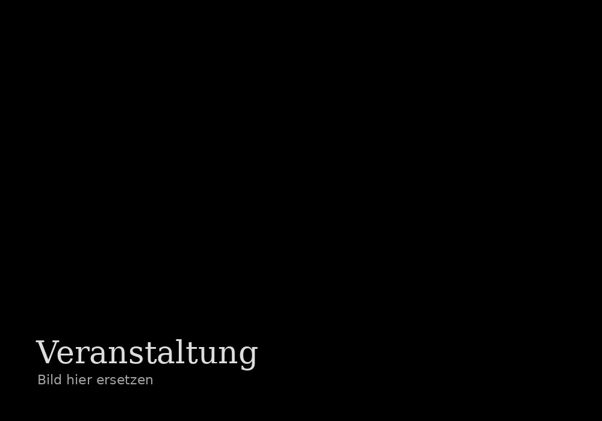

„Die Erinnerung kann man nicht ausziehen wie einen Mantel.“
Luxemburger Frauen im Zweiten Weltkrieg – ihre Geschichten von Widerstand, Verfolgung und Mut während der nationalsozialistischen Besatzung.
Mehr erfahren
Luxemburger Frauen im Zweiten Weltkrieg – ihre Geschichten von Widerstand, Verfolgung und Mut während der nationalsozialistischen Besatzung.
Mehr erfahren
Die bewegende Lebensgeschichte eines Jungen, der das Konzentrationslager Bergen-Belsen überlebte und dessen Erinnerungen uns mahnen.
Mehr erfahren


Ausstellungen über Luxemburger Frauen im Widerstand und ihre bewegenden Geschichten.
Mehr erfahren →Buchen Sie Vorträge zu Widerstand, Verfolgung und Erinnerung.
Mehr erfahren →Angebote für Schulen, Jugendgruppen und Erwachsene.
Mehr erfahren →Publikationen, Biografien und wissenschaftliche Arbeiten.
Mehr erfahren →Aktuelle Forschungsprojekte und Interviews zur Luxemburger Geschichte.
Mehr erfahren →“Wer sich der Vergangenheit nicht erinnert, ist dazu verdammt, sie zu wiederholen.”
– George Santayana